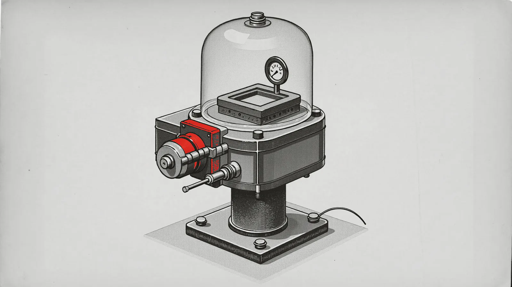

The wall between your GPU and your files is four API calls wide.
Share a model on RogerAI and the worry is reasonable: does the person using it get anywhere near your computer? We traced the actual wire protocol and source to give a precise answer instead of a reassuring one.

"If I share my model, can the person using it see my files?" is
the right question to ask before you run roger share,
and it deserves a real answer, not a brand promise. So here is the
actual mechanism: two separate machines are involved in every
request, and only one of them ever touches a file, a shell, or a
command. It is never the one sharing the GPU.
Every request has an operator and a requester.
When someone uses a model you are sharing, there are two computers in the story: yours, running the model, and theirs, asking the question. RogerAI's job is to connect them without ever letting one reach into the other. The part people worry about, an agent reading a private file or running a command, is real technology. It just runs on a specific machine, and it is worth being precise about which one.
Runs the model.
A local server - Ollama, llama.cpp, LM Studio, vLLM - that you were already running before you ever shared it. RogerAI does not add anything to it.
Runs the harness.
The agent that reads files, runs shell commands, and asks for confirmation before either. This code runs on whoever is asking, never on whoever is answering.
Four shapes of message. Nothing else fits.
RogerAI's wire protocol defines exactly what a shared station receives, and the shape is narrow on purpose. Every job your machine is handed carries just four fields: an id, an anonymized requester tag, a raw request body, and a path. That path is not free text: it is checked against a fixed allowlist of exactly four values, chat completions, its back-compat alias, text-to-speech, and speech-to-text, and anything else is rejected before it reaches your model. Nothing outside that set gets through, and there is no field for a file, a shell command, or a permission to execute anything. The message format itself cannot carry one.
{
"id": "job_8f2a...",
"user": "callsign_4471",
"path": "/v1/chat/completions", // or the 3 other allowlisted paths
"body": { "messages": [ ... ], "model": "..." }
}
Your station's own relay code forwards that body
field to your local model server unread, and forwards what
comes back to the broker unread too. It does not parse the
conversation for intent and does not act on anything the model
writes. The rewrites that do happen are narrow and protective
of you: your own default voice fills in a speech request that
omitted one, your upstream key is stripped from anything relayed
back in case your local server ever echoed it, and on some
backends the request is pinned to the model you offered so it
cannot be talked into loading a different one. A
prompt that says "read /etc/passwd" is, to your machine,
indistinguishable from a prompt that says "write me a poem":
both are just bytes in a JSON field that get forwarded to a
text generator and forwarded back out.
The model can suggest. Only the harness can act.
When a model "calls a tool," what it actually does is write a
short piece of structured text describing an action it would
like taken, nothing more. That text means nothing until
something decides to act on it. On RogerAI, that something is
the harness: RogerAI's own tool-calling agent, the code
behind roger's [0] AGENT screen and the
browser console. It reads files on its own, and writes files
or runs shell commands only after asking, by default, and it
exists only in the client you run to talk to a model,
never in the code that serves one.
Model proposes
A tool call is generated as text: a JSON object naming a function and its arguments. Proposing costs nothing and changes nothing.
Text travels back
The proposal rides home in the same response body as any other answer, through the broker, to the requester who asked.
Harness confirms
On the requester's own machine, in their own working directory, a write or shell command asks y/N by default before it runs.
Action happens there
File reads and writes are sandboxed to that directory;
absolute paths and ../ escapes are rejected
outright.
Worth stating plainly, including the parts that are not a blanket "confirmed every time." Reading a file needs no confirmation and runs on its own, because a read cannot change anything; it is still sandboxed, since path traversal is rejected in code, not just discouraged in a prompt. Writing a file or running a shell command asks first, by default, and a shell command is not path-sandboxed the way a file read or write is, since an approved command can still reach outside the working directory, so the confirmation itself is the real control there. A requester can also choose to run in a fully permissive mode on their own machine, skipping that y/N for their own session, exactly the way turning off a warning dialog for yourself works anywhere else. Whichever setting they picked, every one of these actions happens on the requester's disk, in the requester's directory, decided by the requester. None of it reaches the station serving the model, and none of it is a choice made on your behalf.
Your machine never listens. It only ever asks.
Separate from what a message can contain is whether anyone
could reach your machine directly at all. They can't. Sharing
a model opens no inbound port: your station repeatedly asks
the broker "anything for me?" over an outbound connection it
initiated, the same way a browser tab polls a website. Nothing
on the public internet can connect to your machine through
RogerAI, because nothing on the sharing path is listening for
it to. (A couple of RogerAI's own local tools, the browser
console and the terminal's own proxy, do bind a port, but only
on 127.0.0.1 - your own machine talking to itself,
unreachable from your network or beyond.) Prompts are also
screened by a broker-side moderation service before they reach
your station, though we will not overstate that one: it is a
real, active layer, not an absolute guarantee, and if the
screener itself goes down it is built to fail open with a
loud internal alert rather than silently block everyone's
traffic.
Questions people actually ask
- If I share my GPU, can someone see my files?
- No. The message format your station receives has no field for a file path or a command, only a chat or voice request matched against a fixed list of four allowed endpoints. There is nothing to see with, because there is nothing that lets a request reach your filesystem in the first place.
- What if someone tricks the model into asking for a file?
- A model can only ever write text describing what it would like to happen. Turning that text into a real action requires a tool-calling harness, and RogerAI's harness runs on the requester's own machine, never on the station serving the model. A "tool call" a model writes to your station is, to your station, indistinguishable from any other sentence.
- Does sharing open a port on my network?
- No. The connection is outbound-only: your machine polls the broker for work the same way a browser polls a page for updates. Nothing is listening for an inbound connection, so there is nothing to scan or connect to from outside.
- Is the model server itself sandboxed by RogerAI?
- RogerAI does not run your model at all. You already run a
local OpenAI-compatible server (Ollama, llama.cpp, LM Studio,
vLLM) for yourself;
roger sharerelays requests to it unread, the way it already answers you. Sharing adds a forwarding layer, not a new capability. - Where does file access actually get sandboxed, then?
- On the requester's own machine, inside RogerAI's harness: file reads and writes are restricted to the working directory they launched in. A read runs on its own; writing a file or running a shell command asks for explicit confirmation, showing the literal command, by default, unless the requester has chosen a fully permissive mode for their own session.
- Is my API key or identity exposed to whoever I'm serving?
- No. Your upstream key is stripped before anything is relayed back, and stations are identified by an anonymous callsign, never a hostname or account.